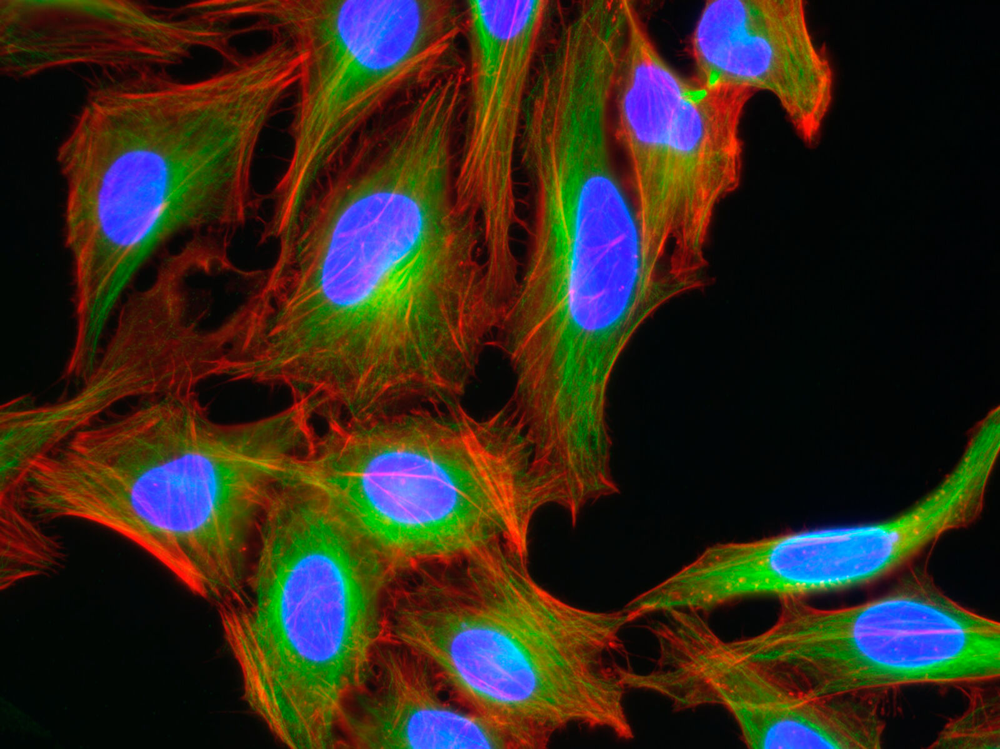

让生命科学的突破，
更快发生。
用 AI 扩展理解生命的能力。
连接科学问题、研究者与真实验证。
显微影像 · 视觉参考
一份长期的研究议程。
从值得回答的问题出发。
我们希望理解疾病如何发生，寻找更好的治疗，使受损组织恢复功能，让更多人拥有更长的健康生命。
从杭州萧山起步，以开放合作连接更广的科学力量。五个主题保持远景，且允许彼此交叉。具体学科、疾病与技术，在多维图谱中继续展开。
生命如何组织自己？
探索细胞状态、基因调控与生命系统的基本规律，为理解疾病与功能修复建立基础。
一张可以继续追问的
研究与合作图谱。
五个使命主题不是全部学科。用六条分类轴连接生命机制、疾病、健康目标、技术方法、研发阶段与协作角色。
进入交互图谱 ↗具体问题
为什么重要，当前卡在哪里
证据与边界
已知什么，还需要核查什么
能力与机构
需要谁，匹配依据是什么
首轮任务
交付什么，怎样决定下一步
我们想推进的
下一步。
把宏大的目标，转化为可以检验的问题。
邀请科学判断、计算能力与实验经验。
前沿观察。
读懂一项进展，也看清它还没有回答什么。
把合作，落到具体任务。
面向研究团队与有研发需求的企业，共同确认问题、投入和可检查的交付。
以下为首期拟探索方向，实际承接范围与条件需共同评议。研究者与实验团队
提出重要问题，参与科学复核、方法或实验工作；共同约定经费、发表和成果安排。
企业与技术团队
带来真实研发需求，获得可检查的分析、工具或验证交付，减少下一步决策的不确定性。
愿意长期支持的人
支持有明确问题与评审机制的研究，了解资金用途、阶段结果，以及为什么继续或转向。
让问题与能力相遇，
让想法接受验证。
以小而专注的核心，连接计算与实验团队。
让每一次工作，为下一轮研究留下基础。
提出问题
梳理原始证据，寻找值得推进的研究缺口。
组织研究
共同审定方法，明确团队、投入与成果安排。
真实验证
运行分析，检验关键判断，记录结果与局限。
持续积累
保留可复用的工具和知识，决定下一步投入。
能力在这里连接。
寻找互补的研究能力，围绕具体问题展开交流。
公开资源地图 · 待接洽以下机构仅作为公开能力参考；尚未确认入驻、合作或背书。
家家健康的下一步，
走向真实的研发能力。
本计划由家家健康发起筹备，拟从AI研究与工程、证据评议及具体合作任务开始，逐步建立能够持续提出问题、执行研究并积累技术的团队。
现有健康产业联系是起步条件。每项研究的科学负责人、数据、实验条件与经费，仍需逐一落实。
公开背景：2025年健康产业大会报道 ↗建立可检查的起点
选择重要问题，核查原始研究，形成实际运行的分析样例与科学复核。
完成有责任人的任务
共同约定范围、投入、交付和权利，按结果判断工作是否值得继续。
留下下一轮的能力
积累可复用的方法、工具和合作关系，按条件发起更长期的研究计划。
参与前，你可能关心
这五个使命主题是否涵盖了所有方向？
它们不是完整或互斥的学科分类。图谱另设机制、疾病、健康目标、方法、阶段和角色六条轴，收录早筛诊断、免疫代谢、精神健康、罕见病、感染防御等问题；未覆盖的条目明确标为待补。
地图里的机构已经加入了吗？
尚未确认。它们是基于官方公开资料整理的能力候选。标签匹配不代表实验资源可使用、对方愿意合作或机构为本计划背书。每个节点都保留来源和能力边界。
现阶段有哪些已经完成的研究成果？
当前公开的是研究议程、外部研究观察和拟议任务，不宣称已有家家健康完成的科学突破。后续实际运行的分析、验证结果和未解决问题，会按真实状态记录。
合作如何约定费用、发表和成果使用？
以具体工作为单位共同确定任务、负责人、预算、交付和验收，并约定数据、代码、背景知识产权、新成果及发表。页面没有默认的固定价格或统一成果归属。
可以直接在这里提交病历或申请治疗吗？
本网站用于研究与合作交流，不提供诊断、处方或治疗申请。请勿填写患者身份、病历或未获准分享的数据。涉及人的研究需要另行确认相应伦理、机构与数据使用条件。
生命的下一种可能，
值得一起探索。
带来一个研究问题、一项技术能力，
或一个愿意共同推进的计划。
从你的想法开始。
选择参与方式，生成一份合作意向，
把问题、能力与下一步写清楚。
筹备版：意向可保存在本机并导出。
正式接收渠道尚未公布，当前不会发送给团队。